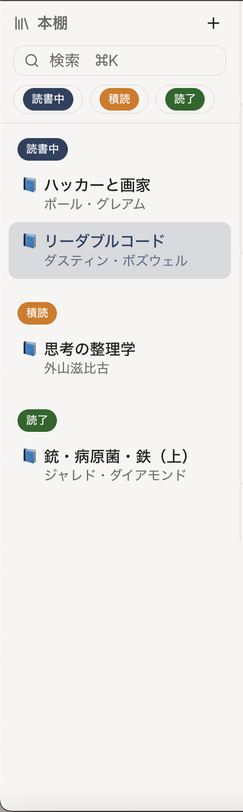
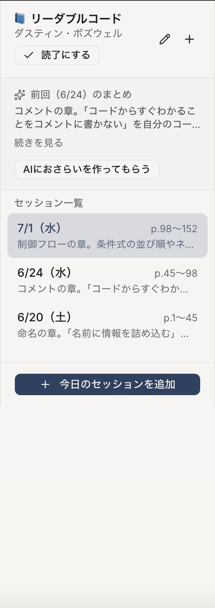
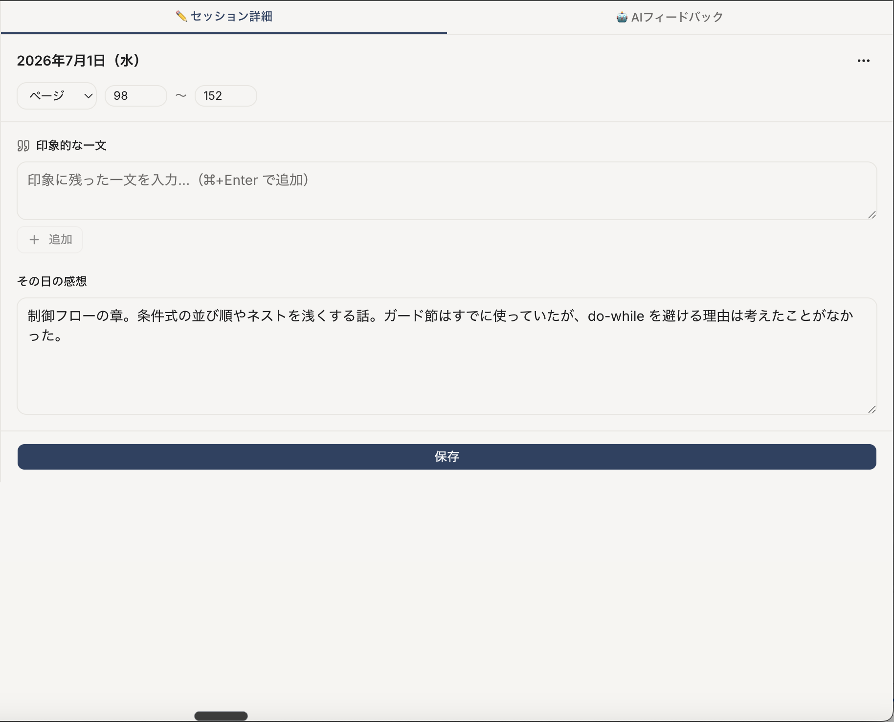
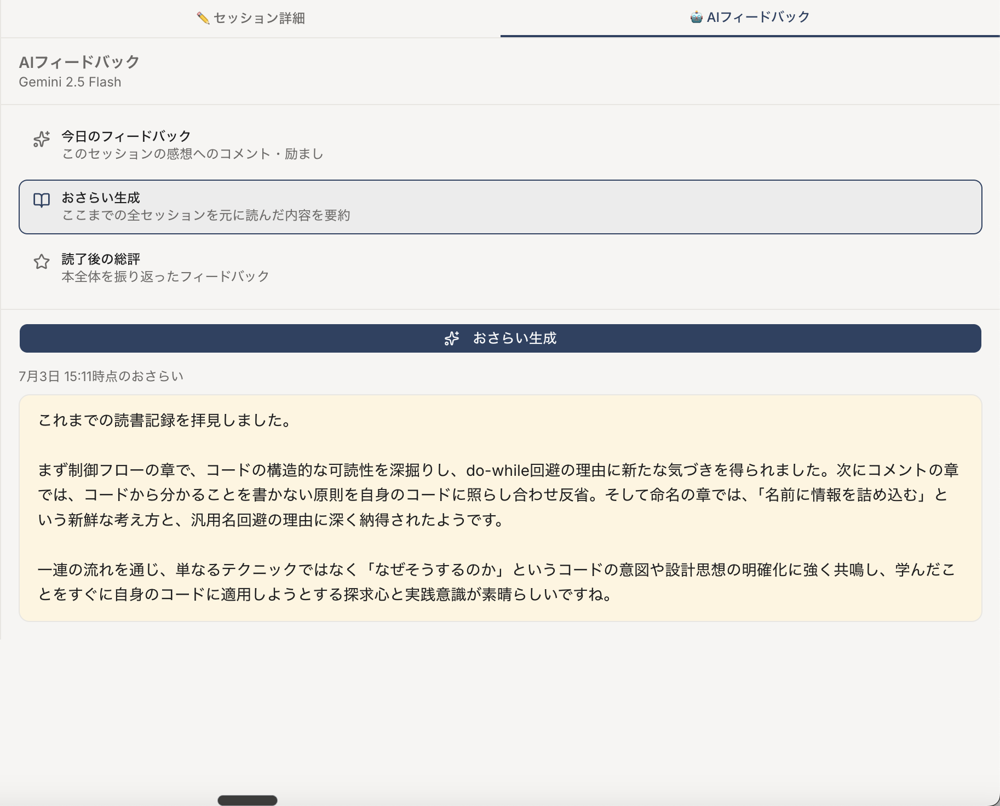

読みっぱなしにせず、その都度自分の言葉にすることで内容が頭に定着する。
感想にコメントや励ましが返ってくるので、記録も読書も続けるモチベーションになる。
「内容は忘れたけど、また読むかも…」の本も、感想と引用が残っていれば整理できる。




| 📁 Gitリポジトリ(Markdown) | 📄 JSONファイル | 🗄️ データベース(Neon/PostgreSQL) | |
|---|---|---|---|
| スマホなど複数端末から使う | △ push/pullが必要 | △ 置き場所の工夫が必要 | ◎ Webアプリから常時読み書き |
| 同時に書き込んでも壊れない | △ コンフリクト | ✕ 全体を上書き=消える危険 | ◎ 行単位で安全に更新 |
| 必要な分だけ取り出す | △ ファイルごと読む | △ 全部読み込んでから探す | ◎ SQLで絞り込み・並べ替え |
| データの形と関連の保証 | ✕ 自由記述 | △ 形式チェックは自前 | ◎ 型+外部キー(本↔記録↔引用) |
どうしたら効率よく知識や感性を自分のものにして、挫折せずに新しい本・難しい本にもチャレンジできるかを grill-me で問答を重ねて設計に落とし込んだ。
AI機能は無料枠に収まるAPI構成に設定。気兼ねなく使えることを優先した。
読書の合間に手軽に入力できるよう、スマホ画面でも崩れず使えるレイアウトにした。
細かいところできちんと動かなかったり、デザインとして見辛かったり、頭の中だけでは設計し切れていないことがモックで発覚した。
記録した日付が1日ズレたり、使っていた Gemini 2.0 Flash が廃止されて本番のAI生成だけが失敗したりした。
何をどこに紐づけて保存するのか、どのデータを残しておくのかなどの設計に時間がかかった。